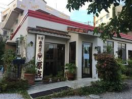

営業時間 : 11:30〜24:00(L.O.23:00)
カフェ ユニゾンの「ユニゾン」は、調和や一致、音楽用語で斉唱、斉奏を意味する言葉です。
昼の11:30〜18:00は「沖縄文化食堂」、夜の18:00〜24:00は「沖縄文化酒場」をキーワードに、食文化をはじめとして、さらに沖縄の文化に
コミットしたカフェになるよう、リニューアルを進めています。
ネット接続ができます。電源も多数設置してありますので、お仕事、お勉強、打ち合わせなどにも便利です。
ほぼ毎月ごとにアーティスト作品の展示や、雑貨等のフェアなどを開催しており、ギャラリー、セレクトショップとしてもお楽しみいただけます。
飲食利用なしでの、展示、フェアのみの鑑賞・購入もOKです。
Study Place
CAFE UNIZON
(カフェユニゾン)

原点
営業時間：10:00～18:00
定休日 : 日曜日
「原点」は山里三叉路から北谷向けに300メートルほど行って下記画像の場所を左折すると、
左手にあります。「原点」のメニューはコーヒーのみ！
HOTorICE。
500円。
こだわりのメニュー。シンプルイズベスト。
「原点」のコーヒーは6時間以上かけて水出しし、3日寝かせたこだわりの逸品。

Tettoh Coffee
(鉄塔コーヒー)
営業時間 : 8:00～18:00（L.O.17:30）
沖縄本島の中部・東海岸沿いにあるうるま市は、個性的なお店が数多く眠る地域です。
中でも、コーヒー好きの心をくすぐる「Tettoh Coffee（テットウコーヒー）」は、旅の足休めにおすすめしたい一軒。道しるべとなるのは、途中にある看板と鉄塔です。
空にのびる鉄塔のふもとに佇む店は、その名自体がまるで地図のようですね。
初めての一杯にセレクトするなら、「テットウブレンド」をどうぞ。ほわんと湯気のたったカップの中には、日々の豆の状態に合わせて焙煎、ブレンドされたコーヒーを抽出。
心地の良い飲み口は、ふっと身体に溶け込んでいくような調和のとれた味わいです。

Gwave Cafe
(ジーウェーブカフェ)
営業時間 : 8:00 ~ 18:00
「情報産業の中心にあるべき理想的なカフェ」を追求し、完成したのがGwave Cafeです。
海の香りを運んでくれる心地よいそよ風。太陽のぬくもりを感じる暖かいテラス。 一流の建築家によって創られた居心地のいい空間。最高のカフェの条件は充分に満たしています。
無料でインターネットを利用できるほか、iMacやiPadの貸出し、電源や、コピー、プリントアウト、スキャンなど仕事や学習に役に立つサービスが満載です。
友人との会話を楽しんだり、集中して勉強したり、仕事のアイデアをねったり、MacBookでインターネットで情報収集したり、時には映像編集やアートを生み出してみたり。
沖縄出張の方には仕事の拠点としてお使いいただくことも。

KEY'S CAFE
(沖縄北谷店)
営業時間 : 9:00 ~ 22:00 (L.O.21:00)
北谷のMacBook持ち歩き族にとってはオススメの場所。
フードのラストオーダーも21時ということで、深夜の食べ過ぎも防げます。
コンセントも多数設置されているので、バッテリー寿命の短くなったノートPCでも安心して作業できます。
店内にはテーブル席やお一人様カウンター席などいくつもバリエーションがあるので、もくもく作業から打ち合わせまで利用できます。